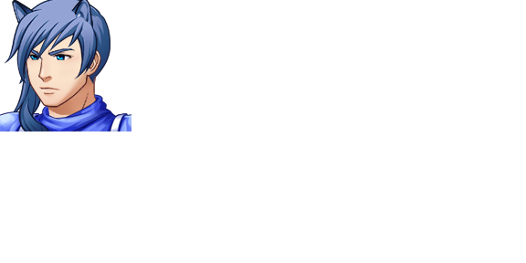

| Lehen | |
 | |
| Attributes | |
| Name Meaning: | first |
| Unique Ability: | Unknown |
| Location: | Occupied South Ward |
| Role: | Boss (Chapter 7) |
| Affiliation: | Ice Realm |
| First Appearance: | Chapter Seven |
| Typing Style: | Normal. |
| Music Theme(s): | "Cats Always Land On Their Feet" (shared with Bigarren and Hirugarren) |
| Details | |
| Species: | Game Character (Feline) |
| Gender: | Male |
| Eye Color: | Blue |
| Hair Color: | Periwhinkle Blue |
| Status: | Dead |
Lehen is a doormat, especially where Bigarren and Izoztutako are concerned.
Lehen, Bigarren, and Hirugarren 'the catsketeers' occupy the South Ward of Urrezko City. After their boss battle, they retreat, only to be killed by Ilargia in seconds.
Lehen is a competent fighter, but not incredibly strong.
Lehen is directly subordinate to Bigarren, and treats her with an amount of respect.
Lehen serves alongside Hirugarren.
Lehen, Bigarren, and Hirugarren serve Izoztutako, and venerate her as their queen.
| This page is in the folowing categories: Male Characters, Dead Characters, Game Characters, Feline |